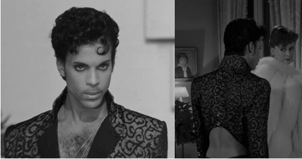
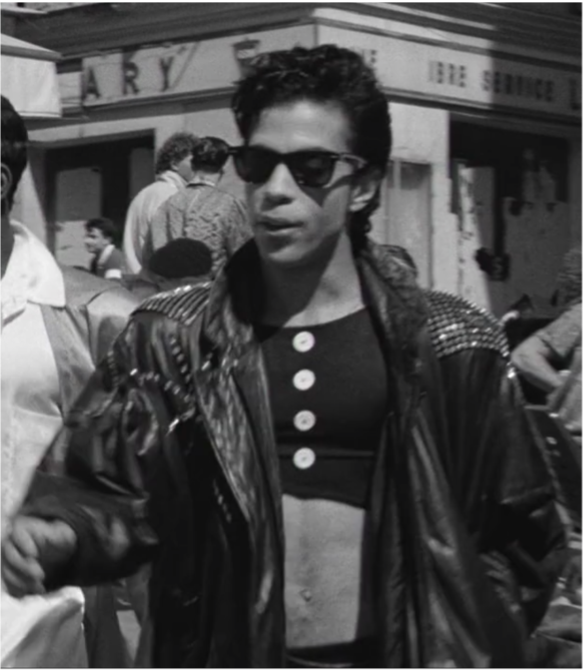
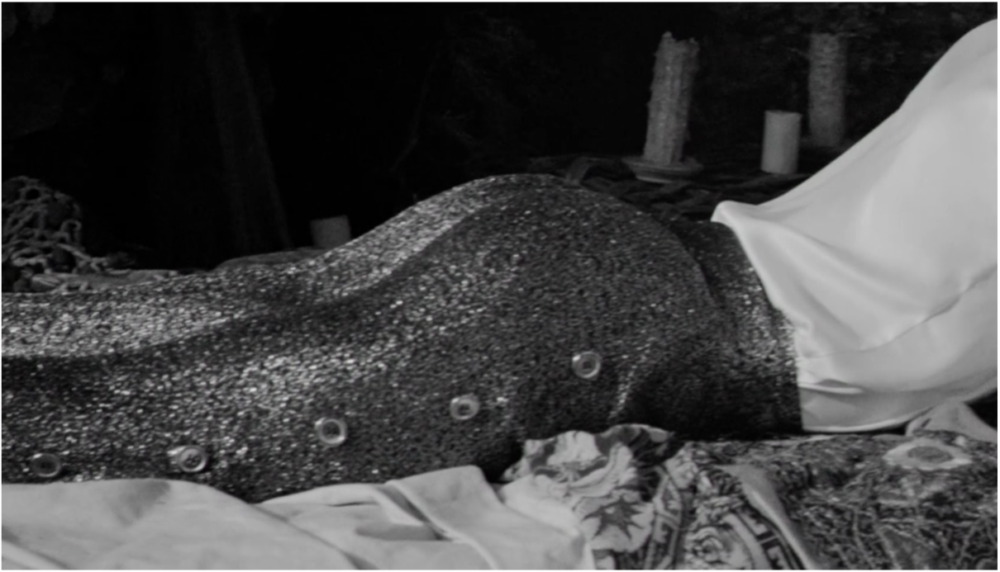
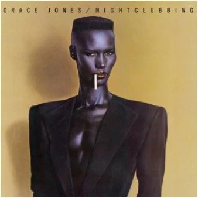

The Performance of Outrage Over Black Androgyny
In this post, I consider reception of the ways in which Prince and Grace Jones blurred or defied the norms of gender performance, with an aim to explain visceral reactions of their androgyny. In this paper, I examine the reception of nonheteronormative musicians, how they have been viewed as distasteful, and explore the visceral reactions and the embodiment of disgust displayed by their critics. I first give a brief overview of androgyny, and analyze the performance of androgyny in the work of Prince and Grace Jones after which visceral negative criticism of their androgyny is presented, and the embodiment of these reactions is discussed.
The term androgynous is defined by the AACRAO as Identifying and/or presenting as neither distinguishably masculine nor feminine. [1] Androgyny is being used over terms like bigender, nonbinary, gender fluid, and genderqueer since androgyny does not necessarily relate to gender identity and can be used to refer to both Prince and Grace Jones. Focusing on the embodiment of androgyny and the critical reception of androgynous artists, it is necessary to discuss the performativity of doing gender. Given the nature of their professions as entertainers, Prince and Grace Jones have been spoken of as performing gender or androgyny. In Undoing Gender Judith Butler discusses the social inclination to conform to constructions of gender as a way of belonging, but suggests a kind of spiritual rightness in maintaining one’s ambiguity,
There are advantages to remaining less than intelligible, if intelligibility is understood as that which is produced as a consequence of recognition according to prevailing social norms. Indeed, if my options are loathsome, if I have no desire to be recognized within a certain set of norms, then it follows that my sense of survival depends upon escaping the clutch of those norms by which recognition is conferred. It may well be that my sense of social belonging is impaired by the distance I take, but surely that estrangement is preferable to gaining a sense of intelligibility by virtue of norms that will only do me in from another direction. Indeed, the capacity to develop a critical relation to these norms presupposes a distance from them, an ability to suspend or defer the need for them, even as there is a desire for norms that might let one live.[2]
Prince Rogers Nelson was a prolific singer, songwriter, guitarist, and producer who is often regarded as one of the most talented and influential musicians of his generation. Prince self-produced and recorded his debut record, For You, for Warner Bros. Records when the artist was 19 years old. [3] For You was the first of nearly forty studio albums Prince would release under his own name over the course of his life. Prince increased his creative output by forming several other side projects, notably The Time (AKA Morris Day and The Time), for which he would write the music and perform the instrumental parts on records. Michael Wells penned an early writeup of Prince for the New York Amsterdam News in which he said, “I can sum up the totality of Prince in two words, musical genius. On his debut album, For You, he played twenty-seven instruments and sang all lead and background vocals.”[4] Throughout his career, Prince was often noted for his musical mastery as well as his sexuality and his ambiguous performance of gender. In the very same article, Wells describes the masculinity and femineity of his vocal performances, asking readers, “Can you imagine a voice that is a mixture of Minnie Riperton, Smokey Robinson and Robert Plant? No! Well that’s what kind of voice God has blessed Prince with.”[5] This vocal performance is one of myriad of way that Prince, “denie[d] himself and his audience the luxury of an intelligible gender,” and “altered and transcended the culture in the 80s and 90s by regularly wearing make-up and women’s clothing – yet was considered a hetero-sex icon.”[6]
Several critics in the early 1980s noted his falsetto voice as well as the sensuality of his performances. In another article printed for New York Amsterdam News, Gene Gillis writes about the crowd’s frenzy over Prince’s sexuality. Interestingly, beyond the use of male pronouns for Prince, the description of the artist’s sensuality and the reaction by the crowd does not contain many gender descriptors:
This is the only time the crowd really got a chance to see Prince’s body, as he took off his shirt, and set off a giant roar from the crowd as they were expecting to see more and he teased them as he unzipped his pants and toyed with his little black bikini, to the roar of the crowd’s ‘take it all off’ which he did not do… He would take his guitar, stroke and lick it at the same time while making sexual gestures on the long end of the instrument with his hands.[7]
Not every critic wrote so favorably of Prince’s performances at the time. The very same month as Gillis’s review, The New York Times printed a review that read:
Prince, the Minneapolis-based funk-rock star who appeared at the Palladium on Wednesday, appears to have reached a delicate crossroads in his career. Having achieved notoriety for his racy songs and flamboyantly erotic performing style. Prince has embraced controversy for its own sake.
His latest album addresses political and religious issues with the same simplistic bravado that he used to devote solely to sexual matters.[8]
The album referred to in The New York Times review was his fourth record, Controversy. The opening lyrics of Controversy's title track addresses the reception of Prince’s sexual performances, specifically noting the perceived ambiguity of his race and sexual orientation
I just cant believe all the things people say – controversy
Am I black or white, am I straight or gay? – controversy[9]
This would not be the first time Prince alludes to ambiguity in his lyrics. As other scholars have noted, Prince references his androgyny more directly in the opening lyrics to his hit “I Would Die 4 U, stating,”
I’m not a woman, I’m not a man
I am something that you’ll never understand[10]
Prince was revered and reviled for his androgyny, which appeared not only in his lyrics and the performance of his music, but in his wardrobe on and off stage as well as his interview performativity. Shortly after Prince’s death, Slate published a story that read, “few could claim to fully grasp Prince’s easy embodiment of both maleness and femaleness. His schooled evasion of conventional classifiers made him endlessly fascinating.”[11] One of his earliest on-camera interviews exemplifies this fluid performance of gender and shows Prince’s sense of humor as he plays off of the perception of his persona. During the interview, Prince is asked “some people have criticized you for selling out to the white rock audience with Purple Rain and leaving your black listeners behind; how do you respond to that?” after which Prince yells “Come on, come on,” clears his throat, stares down the barrel of the camera, and pitches his voice higher to exclaim, “cufflinks like this cost money, okay. Let’s be frank, can we be frank? If we can’t be nothing else then we might as well be frank, okay?” He proceeds to blow kisses at the camera before lowering the pitch of his voice to say,
seriously, I was brought up in a black and white world… I listened to all kinds of music when I was young, and when I was younger, I always said that one day I was going to play all kinds of music and not be judged by the color of my skin, but the quality of my work.[12]
The effeminate diva response to the initial question was being played for laughs, but it shows a sort of ease Prince possessed of code switching between masculinity and femineity in vocal performance. The facet of Prince’s androgyny that received the harshest criticism and the most overt displays of hate was his sense of fashion. From the start of his career, Prince challenged gender norms with his stage attire. During his 1981 tour promoting the album Dirty Minds, “Prince, dressed like his album cover—long coat, red handkerchief around his neck, his hair cut in punk rock style, black leg warmers and little black, bikini-style briefs.”[13] This was Prince’s stage attire when he and his band opened for The Rolling Stones, causing a contemptuous reaction from the predominately white audience as a 1981 Chicago Tribune article states:
How rigid are racial categories in contemporary pop music? Prince recently found out when The Rolling Stones invited him to open several West Coast concerts on their 1981 tour. The suggestions of androgyny in his fluid body movements and flamboyantly minimal stage costume were more than a little reminiscent of some of Mick Jagger's early performances, but the almost entirely white stones audience apparently failed to make the connection. They pelted Prince with fruit and bottles, causing him to cut his sets short.[14]
The writer stresses displays of disgust from the Rolling Stones audience is not just due to the sight of an androgynous artist, after all Mick Jagger was wearing dresses and eye makeup a decade before Prince had. What sparked such explosive reactions was black androgyny; an otherness that the crowd deemed unacceptable. Not all of Prince’s “othering” by the press spectators was so overt. Furthermore, Prince’s displays of androgyny were also not always so overt.
An example from the height of his popularity of blurring gender lines is the movie Under the Cherry Moon, a film that has been jokingly described as “a film noir in which Prince is the femme-fatale.”[15]: Under the Cherry Moon was written by, directed by, and starred Prince, so his presentation was in his complete control. The film begins with a narrator setting scene and identifying the protagonist, Christopher Tracy [Prince], as a “bad boy” and womanizer:
Once upon a time in France, there lived a bad boy named Christopher Tracy . Only one thing mattered to Christopher. Money. The women he knew came in all sizes, shapes, and colors, and they were all rich. Very rich. Private concertos, kind words, and fun is what he had to offer them. Yes, Christopher lived for all women, but he died for one. Somewhere along the way, he learned the true meaning of love.[16]

Figure 1: Stills of Prince in Under the Cherry Moon wearing a jacket that from the front resembles a men’s suit, but from behind shows the back exposed in a way more common of women’s clothing.
In the movie, Prince played a gigolo who seduces wealthy women, and was presented with an implied level of machismo that women found irresistible. Regardless, Prince is still presented as feminine as well as masculine: his wardrobe includes suits that are opened to show his untrimmed chest but cropped short to display his lower back [fig. 1]; an outfit in which he wore a crop top under a big leather jacket [fig. 2]; his face is covered in sideburns and light facial hair, but he is wearing high heels and eyeliner. Additionally, at several points in the movie, Prince the director films Prince the actor using camera techniques stereotypically used to sexualize women in movies, including: POV often with a male subject to a female object; framing fragmented body parts (when only certain body parts are in frame), and body pans [fig 3]. Similar to press surrounding his albums and performances, critics focused on Prince’s androgyny in their reviews of Under the Cherry Moon:
Though Under the Cherry Moon is quite awful as movie making, it’s not without social significance, not because of what it actually says but because of what it wants to say. Like so much of our heavily merchandised rock culture, it assumes attitudes and manners that seem designed to shake up traditional American values (God, country and family) in order to make a buck. Subversion-as-mass entertainment has become big business.
…The film’s most effective moments –and the funniest—have nothing to do with Christopher’s Romeo-and-Juliet affair with Mary Sharon, but with his life with Tricky and their friendship since childhood. In their scenes together, the two men are no less androgynous than their costumes. When they camp it up and treat each other with tender loving care, their sexuality is intentionally made to seem ambiguous. Their behavior is another knowing affront to our forefathers’ expectations of traditional American manhood, white as well as black.[17]
This review does not exemplify the same reactions of disgust shown in Prince’s 1981 concert with The Rolling Stones. However, this review does focus on how “traditional manhood” is woven into the core of American society, allying performance of gender—particularly masculinity— to national identity and moral values. This perception of American moral manhood could explain how Prince’s androgyny has been so negatively received. It is not just being perceived as distasteful; to some, it is an undoing of American moral fabric.

Figure 2: still of Prince in Under the Cherry Moon wearing a crop top and leather jacket.

Figure 3: Still of Prince in Under the Cherry Moon in which the camera is slowly panning body in a way directors often reserve for sexualizing women in movies.
Another star who has often been noted for her embodiment of androgyny is the Jamaican-born singer, model, and actress Grace Jones. Jones gained notoriety in the late 1970s and 1980s for her modeling, and later music career, and her celebrity grew throughout the 1980s as she appeared in big-budget Hollywood films. On the cover of her 1981 album Nightclubbing, Jones’ embodiment of androgyny can be seen in the way she is presented wearing a men’s suitcoat and her hair cut into a flattop crewcut, but also wearing bright red lipstick and eye makeup [fig. 4]. The indistinctness of Jones’ gender presentation is also reflected in the lyrics of Nightclubbing'sopening track, “Walking in the Rain,” “Feeling like a woman, looking like a man / Sounding like a no-no, mating when I can.”[18] Francesca Royster said of Jones’s work “and that of other black artists influenced by her, we see the wedding of disco and punk, art and fashion, male and female, animal and human, and human and machine to create new notions of black sexuality.”[19] As was seen with Prince’s presentation of gender, Jones’ androgyny not only complicates perceptions of gender, but perceptions of black sexuality. Jones’ performance of identity—in particular—presents a more complicated presentation of race with her use of animal drag, which “puts her into the larger history of the ways that performers of the African diaspora use performance in complex ways to critique the dehumanization of black people.”[20]

Figure 4: Album cover. Grace Jones. Nightclubbing
Perhaps it is due to the intersectionality of Grace Jones as a gender-defying black woman who challenged prevailing perceptions of both gender and race, the criticism of her appearance in mainstream media was more abundant and more consistently disturbing than the criticism levied against Prince. The harshness of these criticisms could also be influenced by Jones’ appearances in these films being so far removed from the context of her musical and modeling careers. The presented anecdata was collected from IMDb and Amazon reviews of the 1985 James Bond film A View to a Kill, and the 1992 Eddie Murphy comedy, Boomerang.
In A View to a Kill, Jones plays the May Day, the bodyguard to antagonist Max Zorin (Christopher Walken). Early on she is presented as an imposing physical presence, being able to practice martial arts at an elite level, reign in an out-of-control horse by herself, and hoist grown men over her head with ease. Throughout the film, Jones is either presented in a varied wardrobe including outfits that highlight her muscular build, full-length dresses, men’s business attire, and oversized leather jackets; the blazer she wears in several scenes is reminiscent of the Nightclubbing cover.
Her wardrobe and physicality both exemplify Jones’ being –as Royster points out—a “known quantity of strangeness, packaged, in some ways to create an experience of risk.”[21] Grace Jones stands out even more since, like most James Bond movies, most of the cast was white—Jones having been one of a handful of non-white characters featured. A View to a Kill was Sir Roger Moore’s final appearance as Bond. Moore was 57 at the time, and in the film, he slept with four women including three petite white blonds 28-30 years his junior. However, it was his sex scene with Grace Jones, and her general presence in the movie that drew the ire of many online reviewers.
The scene between Bond and May Day is less than a minute. At this point in the movie, Bond is spying on Zorin and May Day, staying on the grounds of their palatial estate under an assumed identity. Bond is found out by Zorin and May Day as being an intruder, and as Bond is sneaking back into the building after a night of sleuthing, the two villains enter Bond’s room looking for him. Seeing this, Bond slips into May Day’s room, and is found by May Day, naked in her bed. May Day disrobes, showing the camera her bare back, before sliding into bed next to Bond. May Day pushes Bond onto his back and the two kiss for a while before the scene fades to black. The sex scene itself is short and not very risqué especially when compared to a different point in the film in which Bond and Pola Ivanova (Fiona Fullerton) are naked in a hot tub together for more than two minutes.[22] Additionally, Bond acts as the aggressor in his scene with May Day, which I mention because several reviews suggest May Day forced herself onto Bond. One reviewer bluntly puts it, “the poor old boy is practically raped by Grace Jones!”[23]
Some of the less-extreme reviews (both ostensibly positive and negative) describe Jones as: weird, strange, exotic, butchy, bizarre, annoying, odd, unattractive, and beastial. There were several, though, that go beyond simply using quick descriptors to display their visceral disgust and sexual repulsion. The first example shows a revulsion toward the idea of sleeping with Jones, but also a secret desire for the experience:
Moore must be getting senile or have cataracts coz [sic] he voluntarily has sex with Grace Jones (okay, fine. Maybe I’d do it just to say I did, but keep that under your hats).[24]
The following two examples both illustrate the writers’ negative opinions of Jones’s looks as well as reactions to her mere presence on screen with the first review simply saying her presence created an unpleasant experience, while the second reviewer considered bodily harm due to the sight of Jones.
Grace Jones as May Day is so masculine it's impossible to find her attractive, therefore any screen time involving her is quite unpleasant, particularly the scene where Bond beds her. Ouch.[25]
Grace Jones – she's got to be the most unattractive female to ever appear in a Bond movie. Who in the world ever thought she was sexy? If I saw anymore of her backside, I think I might have ripped my eyes out.[26]
The final review from A View to a Kill is the most upsetting and hate-filled, containing warn out comparisons of homosexuality to perversion and the assertion that Grace Jones is not a woman:
This is the only movie for Bond which required from him having a homosexual experience, since I don't consider (Grace Jones) a woman in the first place! Casting her as an evil Bond girl was [an] historical fatal mistake, one of the stupidest decisions I've ever witnessed, and a lousy try to attract the pervert audience. She seemed, with those creepy costumes and that awful haircut, more like "The Bogeywoman". Honestly, I've had some time till I became convinced of her as not a MAN![27]
Boomerang is a raunchy romantic comedy in which Eddie Murphey plays a “womanizing advertising executive” who sleeps with most of the women in the movie. The entire movie is filled with sexual content including several conversations that go into graphic sexual detail. Jones plays Strangé, a character that has been described as “a wild diva whose outrageousness is eagerly sought after to energize a flagging cosmetics line, but threatens to steal the show.”[28] Reviews of Jones’ performance in this film are not as hate-filled as the Bond even though the character is more overtly sexual and eccentric. On its Rotten Tomato page, Boomerang's critic consensus states the movie “injects some fresh color into the corporate rom-com formula, but the frothy fun is undercut by off-putting gender dynamics and misjudged gags.”[29] Perhaps the movie’s focus on black sexuality, or the presence of Eartha Kitt, another black woman who has been described as eccentric, provided a backdrop that it more difficult for critics to “other” Grace Jones for her eccentric performance. That is not to say there was a lack of problematic reviews, there were just fewer of them. Even though reviews of Jones’s performance are generally more favorable, the language some used to describe her sexuality still articulate a level of disgust:
Grace Jones, the outrageous singer/actress never lost her touch. Playing the raunchy Strangé made everyone uneasy. Especially when she takes off her panties and rubs it all over Lloyd’s face. I would freak out as well. What’s worse, she grabs Marcus… Then flashes her crotch at Marcus which is really distasteful and visually unpleasant to patrons. I would go to the restrooms and yak my appetizer in seconds.[30]
The worst character in the whole film is Strangé, she dresses up like a freak and all she ever talked and shouted about was dirty sexual things and rudely calling out different people in a restaurant “gay” after Marcus declined her ridiculous offer of sex.[31]
I stress the sexual content of the movies to further highlight the criticisms of Jones since there is a lack of visceral outrage aimed towards the sexuality of other actors and actresses in the films. Grace Jones—like Prince—has had to endure considerable criticism for embodying black androgyny, but the question I still aim to address is “Why?” Why are artists like Prince and Grace Jones the recipients of such visceral reactions? What is it that disturbs people so severely that they throw bottles at a singer, or pen misspelled manifestos in review sections? Furthermore, what is it about black androgyny that causes such harsh responses? To answer these questions, I turn to scholarship regarding disgust and moral outrage.
In Disgust: Theory and History of a Strong Sensation, Winfried Menninghaus describes disgust as “one of the most violent affections of the human perceptual system… a strong vital sensation” that “whether triggered primarily through smell or touch, eye or intellect… always affect[s] ‘the whole nervous system’… It is a state of alarm and emergency, an acute crisis of self-preservation in the face of an unassimilable otherness.”[32] For a Rolling Stones audience of white bikers, or James Bond enthusiasts, the sight of black androgyny functioned as an unassimilable otherness. For Stones fans, it could not be androgyny alone or sexuality in general. The music of The Rolling Stones was hardly G-rated; their 1971 album Sticky Fingers pictured a pair of men’s jeans on the cover with a working zipper that revealed underwear underneath. Furthermore, the opening track, “Brown Sugar” is about having sex with black women, though the lyrics were not enlightened in the least, with Mick Jagger—no stranger to androgyny himself—singing about slavers in New Orleans having sex with African women who were recently “sold in a market.”[33] The Rolling Stones audience also should not have been shocked by the mere presence of black artists since the previous tour was supported by Jamaican musician and former Wailer Peter Tosh.[34] Therefore it was the dual otherness of a black man performing androgyny and wearing skimpy clothes that pushed the crowd past disgust.
In “Disgust as Moral Judgment,” the force of disgust as such a triggering emotion is explained as having roots in evolution, starting as a survival reflex to spoiled food, but being mapped on to social rejection:
Disgust evolved to help our omnivorous species decide what to eat in a world full of parasites and microbes that spread by physical contact. Discussed indicates that a substance either should be avoided or, if ingestion has already a curd, should be expelled. Although disgust evolved as a food related emotion, it was well suited for use as an emotion of social rejection.[35]
The mapping of violent biological rejection onto emotional social rejection of gender non-conformity interestingly ties back to a quote by Judith Butler,
…if I have no desire to be recognized within a certain set of norms, then it follows that my sense of survival depends upon escaping the clutch of those norms by which recognition is conferred. It may well be that my sense of social belonging is impaired by the distance I take.[36]
By expressing their own sense of identity, Grace Jones and Prince incurred the wrath of complete strangers who were only affected in such that they had to see these individuals. Jones and Prince did not harm these people, they did not wrong them, they simply distanced themselves from heteronormative behavior, and it was perceived as being worthy of visceral social rejection. This may be partially explained by studies linking effects of disgust to a sense of moral outrage. Moral outrage being defined as “anger provoked by the perception that a moral standard or principle has been violated.”is conferred. It may well be that my sense of social belonging is impaired by the distance I take.[37]
In “Origins of human cooperation and morality,” Tomasello and Vaish consider a “first tier” of morality, “where individuals can observe and reciprocate the treatment they receive from others to elicit and reward cooperative and empathetic behaviors that help to protect individual and small group survival,” and a “second tier” which “emphasizes the social signaling functions of moral behavior and distinguishes human from animal morality.[38] At this level, behavioral guidelines that have lost their immediate survival value in modern societies may nevertheless come to be seen as prescribing an essential behavior that is morally “right.”[39]
It is not farfetched to suggest nonheteronormative expressions of gender could create a perception of moral outrage when one considers how deeply doing gender is engrained to much of Euro-American society.
Gender is such a familiar part of daily life that it usually takes a deliberate disruption of our expectations of how women and men are supposed to act to pay attention to how it is produced. Gender signs and signals are so ubiquitous that we usually fail to note them – unless they are missing or ambiguous. Then we are uncomfortable until we have successfully placed the other person in a gender status; otherwise, we feel socially dislocated. In our society, in addition to man and woman, the status can be transvestite and transsexual.[40]
Lorber goes even further by discussing gender as part of a stratification system in which different social differences are categorized and ranked (gender, race, class, etc.), and quotes Nancy Jay in saying “That which is defined, separated out, isolated from all else is A and pure. Not-A is necessarily impure, a random catchall to which nothing is external except A and the principle of order that separates it from Not-A.”[41] Lorber later states that
In Western society, ‘man,’ is A, ‘woman’ is Not-A… in the United States, white is A, African American is Not-A; middle class is A, working class is Not-A, and ‘African-American women occupy a position whereby the inferior half of a series of these dichotomies converge’…. The dominant categories are the hegemonic ideals, taken so for granted as the way things should be that white is not ordinarily thought of as a race, middle class as a class, or men as a gender. The characteristics of these categories define the Other as that which lacks the valuable qualities the dominants exhibit.”[42]
In the cases of Grace Jones and Prince, these artists are not only performing the “opposite” gender than what they are assigned, they are acting out elements of both man and woman simultaneously. By performing androgyny in the public sphere, Prince and Grace Jones illuminated the performative nature of gender writ large, and this presentation of living outside of the gender binary has created such a level of discomfort, that some of those who feel “subjected” to this ambiguity are incensed with a feeling of moral indignation or violent repulsion that vile (if not violent) displays of disgust are justified, since black androgyny is categorically “Not-A” on so many stratification levels.
[1]
[2] Judith Butler, Undoing Gender (New York, NY: Routledge, Taylor & Francis Group, 2004)
[3] Furniss, Charlie. "Prince." Grove Music Online. 2001; Accessed 26 Apr. 2021. https://www.oxfordmusiconline.com/grovemusic/view/10.1093/gmo/9781561592630.001.0001/omo-9781561592630-e-0000046844.
[4] Michael Welles, "Count, Uke, Arl -- Move Over! here's Prince!" New York Amsterdam News (1962-1993) Mar 29, 1980
[5] Ibid.
[6] Tyler Gay, Tina H. Deshotels, and Craig J. Forsyth, “Performing Deviance in Front Stage Spaces: Prince Roger Nelson and the Boundary Fluidity of Masculinity,” Deviant Behavior 42, no. 1 (June 2019): pp. 1-17, https://doi.org/10.1080/01639625.2019.1635862. [6] Tyler Gay, Tina H. Deshotels, and Craig J. Forsyth, “Performing Deviance in Front Stage Spaces: Prince Roger Nelson and the Boundary Fluidity of Masculinity,” Deviant Behavior 42, no. 1 (June 2019): pp. 1-17, https://doi.org/10.1080/01639625.2019.1635862.
[7] Gene Gillis,. "Prince's Dirty Mind Delights Palladium Crowd,” New York Amsterdam News (1962-1993), Dec. 12, 1981.
[8] Stephen Holden, "Rock: Prince at Palladium," New York Times (1923-Current File), Dec 04, 1981.
[9]
[10]
[11] Slate
[12]
[13] Gillis, Gene. 1981. "Prince -- Tomorrow's Black Superstar!" New York Amsterdam News (1962-1993), Jan 24, 35. https://login.lp.hscl.ufl.edu/login?url=https://www.proquest.com/historical-newspapers/prince-tomorrows-black-superstar/docview/226440002/se-2?accountid=10920.
[14] Palmer, Robert. "ROCK: PRINCE SINGS, RACE AND SEX TABOOS TOPPLE." Chicago Tribune (1963-1996), Dec 13, 1981. https://login.lp.hscl.ufl.edu/login?url=https://www.proquest.com/historical-newspapers/rock/docview/172491975/se-2?accountid=10920.
[15] Jason Mantzoukas, June Diane Raphael, and Paul Scheer, “Under the Cherry Moon,” How Did This Get Made, (October 8, 2020).
[16] A View to a Kill (United Artists, 1985).
[17] Canby, Vincent. 1986. "Prince's 'Cherry Moon' Lacks a Glow: FILM VIEW FILM VIEW 'Cherry Moon'." New York Times (1923-Current File), Jul 13, 2. https://login.lp.hscl.ufl.edu/login?url=https://www.proquest.com/historical-newspapers/princes-cherry-moon-lacks-glow/docview/110881115/se-2?accountid=10920.
[18] Nightclubbing (Compass Point Studios, n.d.).
[19] Francesca T. Royster, “‘Feeling like a Woman, Looking like a Man, Sounding like a No-No’: Grace Jones and the Performance of Strangé in the Post-Soul Moment,” Women & Performance: a Journal of Feminist Theory 19, no. 1 (2009): pp. 77-94, https://doi.org/10.1080/07407700802655570.
[20] Ibid.
[21] Francesca T. Royster, “‘Feeling like a Woman, Looking like a Man, Sounding like a No-No’: Grace Jones and the Performance of Strangé in the Post-Soul Moment,” Women & Performance: a Journal of Feminist Theory 19, no. 1 (2009): pp. 77-94, https://doi.org/10.1080/07407700802655570.
[22] A View to a Kill (United Artists, 1985).
[23] Ian Fleming, “A View to a Kill,” Amazon (MGM Home Entertainment, 1985), https://www.amazon.com/View-Kill-Roger-Moore/dp/B011MHDDOO#customerReviews.
[24] Ibid.
[25] “A View to a Kill,” IMDb (IMDb.com), accessed April 15, 2021, https://www.imdb.com/title/tt0090264/reviews?sort=userRating&dir=desc&ratingFilter=0.
[26] Ibid.
[27] Ibid.
[28] Francesca T. Royster, “‘Feeling like a Woman, Looking like a Man, Sounding like a No-No’: Grace Jones and the Performance of Strangé in the Post-Soul Moment,” Women & Performance: a Journal of Feminist Theory 19, no. 1 (2009): pp. 77-94, https://doi.org/10.1080/07407700802655570.
[29] “Boomerang (1992),” Rotten Tomatoes, accessed April 25, 2021,https://www.rottentomatoes.com/m/1039796_boomerang.
[30] “Boomerang,” IMDb (IMDb.com), accessed April 16, 2021,https://www.imdb.com/title/tt0103859/reviews?sort=userRating&dir=asc&ratingFilter=0.
[31] Ibid.
[32] Winfried Menninghaus, Disgust: Theory and History of a Strong Sensation (Albany, NY: State University of New York Press, 2003).
[33]
[34]
[35] Simone Schnall et al., “Disgust as Embodied Moral Judgment,” Personality and Social Psychology Bulletin 34, no. 8 (September 2008): pp. 1096-1109,https://doi.org/10.1177/0146167208317771.
[36] Judith Butler, Undoing Gender (New York, NY: Routledge, Taylor & Francis Group, 2004).
[37] C. Daniel Batson, Mary C. Chao, and Jeffery M. Givens, “Pursuing Moral Outrage: Anger at Torture,” Journal of Experimental Social Psychology 45, no. 1 (2009): pp. 155-160,https://doi.org/10.1016/j.jesp.2008.07.017.
[38] Michael Tomasello and Amrisha Vaish, “Origins of Human Cooperation and Morality,” Annual Review of Psychology 64, no. 1 (March 2013): pp. 231-255, https://doi.org/10.1146/annurev-psych-113011-143812.
[39] Naomi Ellemers et al., “The Psychology of Morality: A Review and Analysis of Empirical Studies Published From 1940 Through 2017,” Personality and Social Psychology Review 23, no. 4 (2019): pp. 332-366,https://doi.org/10.1177/1088868318811759.
[40] Judith Lorber, The Social Construction of Gender (Newbury Park, CA: Sage, 1991).
[41] Ibid.
[42] Ibid.